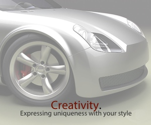
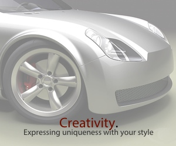

We are proud to serve the community of Stockton, CA. Established in 2004, we provide premier quality auto work and customer service. We specialize in all types of car-related collision repair and restoration services. Our team is experienced in domestic and import vehicle repairs and will make sure to deliver with all expectations.
When it comes to car accidents, we understand these events are stressful. We're here to make sure all the details are taken care of and our main goal is to ease the worries of our customers as we make sure the vehicle is brought back to pristine condition. We work with all insurance companies and will provide temporary transportation while your vehicle is being repaired.
 
